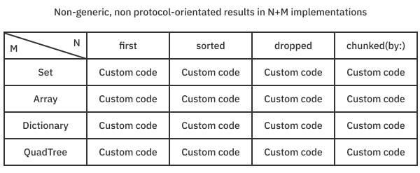
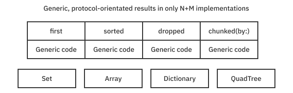
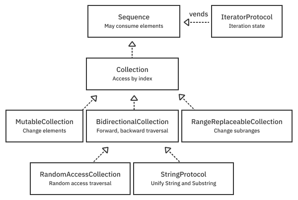
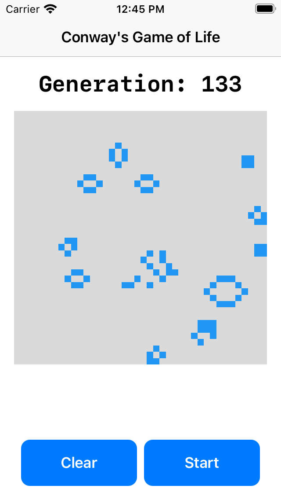

Chapter 6: Sequences, Collections & Algorithms¶
Array, Dictionary and Set stand atop a highly composable hierarchy of fundamental protocols. These protocols, which include Sequence and Collection among others, capture the essence of these types. The Swift standard library design serves as a case study in Swift generics and protocol-oriented programming that you can learn from and leverage.
The concepts these protocols express are general enough that they appear where you might not expect. For example, the ranges and strides you looked at in the last chapter are sequences and collections, just like arrays are. Although a Range type doesn’t need to allocate memory for elements like an Array does, it shares many of the same capabilities and characteristics. In this chapter, you’ll learn about Sequence, Collection and other related protocols and see how to use them to write generic algorithms that operate across type families.
A family of protocols¶
By defining primitive notions of a sequence of values, a collection of values and other collection characteristics using protocols, you can write high-performance, generic algorithms. This lets the compiler deal with the specifics of the memory layout that concrete types use to adopt them.
In other languages, the number of implementations for data structures and their algorithms can face what is known as “the M by N problem”. Without a language feature like generics and protocols, the number of implementations for M data structures and N algorithms is the simple product of the two.

Imagine having to maintain all this code. The above graphic shows just four collection types and four algorithms for a total of sixteen implementations. The truth is that Swift has tons of concrete sequence and collection types such as CollectionOfOne, JoinedSequence, DropWhileSequence and many more.
Thanks to protocols and generics, the number of implementations is only M + N. And that means you never repeat yourself.

In this world, any type that conforms to the required protocols gets all the algorithm implementations generated on-demand for free. The compiler uses the protocol witness table of protocol declaration to implement function definitions. It can also create specializations for particular concrete types as an optimization. Although there’s programmer complexity cost in knowing about these fundamental protocol types, this knowledge pays for itself handily, as you’ll see.
Sequences and collections¶
To take full advantage of the system, you need to become familiar with the protocols involved with sequences and collections. Here’s what the hierarchy looks like:

The hierarchy includes:
- Sequence - This is the most primitive type in the hierarchy that lets you iterate through a list of values. It makes no guarantee about being able to revisit an item. Although a conforming type could be a collection like an array, it could also be a stream of data from a network socket or a sequence of random numbers that never repeat. A type adopting
Sequencecan be immutable but must vend an associated mutable type that conforms toIteratorProtocol. - IteratorProtocol - This behind-the-scenes protocol knows how to get the next element and returns
nilwhen it’s done. It’s possible to use an iterator type directly, but usually, the compiler creates one for you when you use afor-statement. - Collection - All collections are sequences, but
Collectionadds a guarantee that you can revisit items using an index type. If you have an index, you can look up an element in constant time O(1). When you implement your collections, it can be tempting to break this guarantee. But doing so breaks the complexity guarantees of the algorithms you inherit. Try not to do this. If you must break the complexity guarantee, make it clear in the documentation of the API. - MutableCollection - This refines collections that let you mutate elements through an index. The mutation is all about poking individual elements. Importantly, it does not imply the ability to add and remove elements.
- BidirectionalCollection - This spices up a collection to allow you to traverse it both forward and backward by advancing the index appropriately.
- RangeReplaceableCollection - These collections let you modify whole subranges at a time. This conformance lets you delete, insert and append elements.
- RandomAccessCollection - This allows a collection to traverse elements in any order in constant time. It lets you update the index and measure distances between indices in constant time.
- StringProtocol - This is a bidirectional collection used for
StringandSubstring. You’ll exploreStringin more detail in the next chapter.
This list might feel pretty theoretical, so it’s time to get some hands-on practice with some simple, concrete examples.
Iterators and sequences¶
Create a custom type that counts down to zero when you loop over it with a for statement. Open the Countdown starter playground for this chapter and add the following:
struct CountdownIterator: IteratorProtocol {
var count: Int
mutating func next() -> Int? {
guard count >= 0 else { // 1
return nil
}
defer { count -= 1 } // 2
return count
}
}
As you can see, defining an iterator is easy. You need to implement a mutating next() method that updates the state and returns the next element. This code:
- Keeps going as long as the
countstate is greater than or equal to zero. Otherwise, it terminates the iteration by returningnil. - Decrements the count after returning the current value. Changing a value after returning it is a common use of the
deferstatement.
Now, create the actual Countdown sequence type that vends CountdownIterator:
struct Countdown: Sequence {
let start: Int
func makeIterator() -> CountdownIterator {
CountdownIterator(count: start)
}
}
All this type does is return the iterator above. Now, try it out by adding:
for value in Countdown(start: 5) {
print(value)
}
Running the playground counts down from five to zero. Under the hood, the compiler instantiates an iterator for Countdown and calls next() repeatedly until it returns nil. The behind-the-scenes iterator instance is what keeps track of the loop’s state.
Note: In case you missed it, there are a lot of type inference and generic constraints in action here. Sequence types have associated types for the iterators (Iterator) they create and the elements (Element) they return. A generic constraint guarantees that Sequence.Element is the same type as Sequence.Iterator.Element. It’s also possible to hide the iterator’s implementation from clients by returning some IteratorProtocol from makeIterator() instead of a specific type.
Admittedly, the code above is contrived and academic. Still, it’s good to get experience building sequences from the ground up like this so you can appreciate the other tools at your disposal in the Swift standard library. This exercise also reveals how the state and its mutation are kept in iterator instances while the sequence remains immutable.
StrideThrough and StrideTo¶
The previous section might have seemed like a lot of code for the job. Yes, there are simpler ways of accomplishing the countdown task. For example, you could have used a simple StrideThrough type, which you create by calling the stride function you saw in the last chapter. Add this to the playground:
print("---")
for value in stride(from: 5, through: 0, by: -1) {
print(value)
}
print("---")
for value in stride(from: 5, to: -1, by: -1) {
print(value)
}
Both StrideThrough and StrideTo conform to Sequence and result from stride(from:through:) and stride(from:to:), respectively. When you run the playground, you’ll see two more countdowns from five to zero. The argument through: includes value in the stride, while the argument to: goes up to but doesn’t include it.
UnfoldFirstSequence and UnfoldSequence¶
The Swift standard library functions sequence(first:next:) and sequence(state:next:) let you define custom sequences without needing to define a new sequence type (and iterator). Try it out by adding this to the end of your playground:
let countDownFrom5 = sequence(first: 5) { value in
value-1 >= 0 ? value-1 : nil
}
print("---")
for value in countDownFrom5 {
print(value)
}
Running the playground, you once again see numbers counting down from five to zero in the console. The function sequence(first:next:) returns the type UnfoldFirstSequence. You need an initial value and a closure taking the current value and returning the element or nil when done. Notice this sequence can never be empty because you specify the first element.
Next, add this variant to the end of the playground:
let countDownFrom5State = sequence(state: 5) { (state: inout Int) -> Int? in
defer { state -= 1 }
return state >= 0 ? state : nil
}
print("---")
for value in countDownFrom5State {
print(value)
}
Running the playground once again counts down from five to zero. This overload of the sequence() function takes an initial state and a closure that lets you mutate that state with an inout variable. The value returned from the closure is the Optional<Element> type of the sequence. This sequence is represented by UnfoldSequence and is more flexible than the first overload because it treats the state and the elements returned independently.
Note: The name “unfold” is a functional programming term that is the opposite of fold. Swift uses a common alternate terminology reduce instead of fold. You might even argue that the standard library authors should have used a name like Unreduced instead of UnfoldSequence. In practice, you don’t need to worry about the name of these types because they’re seldom declared explicitly and often hidden behind type erasure. You’ll learn more about reduce and friends in Chapter 10: “Higher-Order Functions”.
Type erasure with AnySequence¶
To tame complexity, you’ll often want to hide type details of a sequence from users (and yourself). It would be ideal to return an opaque return type, such as some Sequence, from your function. However, opaque return types don’t currently let you constrain associated types, such as the Element, so unfortunately this doesn’t work. But there’s still a way. Hide these unimportant type details and keep your interface clean with the type erasure AnySequence.
Add this handy helper method for AnySequence to your playground:
extension Sequence {
func eraseToAnySequence() -> AnySequence<Element> {
AnySequence(self)
}
}
This code adds an extension to Sequence that erases concrete sequences to AnySequence. It’s in the same spirit as when the Combine framework type erases publishers, which you might have seen before.
Use the extension helper by adding:
let seq = countDownFrom5State.eraseToAnySequence()
print("---")
for value in seq {
print(value)
}
print(type(of: countDownFrom5State))
print(type(of: seq))
Run it to see that the type of seq is AnySequence<Int> instead of the underlying countDownFrom5State, an UnfoldSequence<Int, Int>. It’s helpful to type-erase method parameters and return AnySequence so you’re not locked into a specific kind of sequence.
Although it hides implementation complexity, there’s a minor penalty to this extra indirection. For example, if you wrap an Array in AnySequence (or AnyCollection), you’ll no longer be able to access the contiguous storage buffer of the array. This lack of access occurs because, once again, protocols generally make no assumptions about the memory layout of the concrete types that adopt them.
Implementing Sequence with AnySequence and AnyIterator¶
In the example above, you defined a sequence and then type-erased it, but AnySequence also gives you an initializer to do both in one go. Add this:
let anotherCountdown5 = AnySequence<Int> { () -> AnyIterator<Int> in
var count = 5
return AnyIterator<Int> {
defer { count -= 1}
return count >= 0 ? count : nil
}
}
print("---")
for value in anotherCountdown5 {
print(value)
}
When you run the playground, you see another countdown from five. This AnySequence takes a closure that makes an iterator. You could make that type explicitly or use AnyIterator which type erases iterators. This version of the initializer lets you define the next() method inline.
The examples above demonstrate the many ways the Swift standard library lets you create a sequence. In the next section, you’ll graduate from counting down from five. First, though, try a few exercises to see if you’ve got the concepts down.
Exercises¶
Answers to exercises, as always, are in the final download materials. For best results, don’t peek — try it yourself first.
- Turn the array
["a", "tale", "of", "two", "cities"]into a type-erased sequence. - Write an extension on
SequencecalledcountingDown()that returns an array of tuples of remaining count and elements. For example, the array from question one returns:[(4, "cities"), (3, "two"), (2, "of"), (1, "tale"), (0, "a")]. Hint: Existing sequence algorithmsenumerated()andreversed()might help you do the job with minimal code. - Create a function
primes(to value: Int) -> AnySequence<Int>that creates a sequence of the prime numbers up to and possibly includingvalue. Brute force prime finding is fine. For example,primes(through: 32)will return[2, 3, 5, 7, 11, 13, 17, 19, 23, 29, 31].
Collections¶
Collections build on top of sequences and feature an additional guarantee that you can revisit elements. To visit an element, all you need is an index that can access an element in constant time O(1). This complexity guarantee is important because many other algorithms rely on this base level of performance to guarantee their own performance.
A FizzBuzz collection¶
Like sequences, an excellent way to learn about collections is to create a simple one yourself. Looking at all the protocol requirements of Collection makes creating one seem a daunting task. However, because most of the API has good default protocol implementations, it’s pretty straightforward. In some ways, it’s easier to create a collection than to create a sequence from scratch. What’s more, because Collection is-a Sequence, you get all the sequence functionality for free. You’ll use FizzBuzz to see this in action.
FizzBuzz is a classic exercise in which you print out numbers from 1 to 100. However, if the number is evenly divisible by three, you print “Fizz,” and if the number is evenly divisible by five, you print “Buzz”. If the number is evenly divisible by both three and five, you print “FizzBuzz”. The twist is that instead of just printing the numbers, you’ll create a custom collection type of numbers, fizzes, buzzes and fizzbuzzes.
Start by opening the FizzBuzz starter playground and adding:
struct FizzBuzz: Collection {
typealias Index = Int
var startIndex: Index { 1 }
var endIndex: Index { 101 }
func index(after i: Index) -> Index { i + 1 }
// .... subscript with index ....
}
This code defines the FizzBuzz collection. You first decide what the associated type for Index will be and define the start and end index. It isn’t necessary to define Index here with typealias, but doing so clarifies the code. The endIndex is defined to be one past the valid range. The function index(after:) defines how to advance your index. In this case, the implementation is trivial and just adds one.
Next, replace the comment with a working subscript operator:
subscript (index: Index) -> String {
precondition(indices.contains(index), "out of 1-100")
switch (index.isMultiple(of: 3), index.isMultiple(of: 5)) {
case (false, false):
return String(index)
case (true, false):
return "Fizz"
case (false, true):
return "Buzz"
case (true, true):
return "FizzBuzz"
}
}
This code uses Swift pattern matching to implement the actual FizzBuzz logic. The switch tuple expression generates the appropriate element for a given index.
That’s it. The default protocol implementations do the rest of the work of making a full-blown collection type. You can test your new collection with:
let fizzBuzz = FizzBuzz()
for value in fizzBuzz {
print(value, terminator: " ")
}
print()
Run the playground and watch it go. Again, under the hood, the compiler is creating a FizzBuzz iterator and calling next() on it repeatedly until the loop terminates. But there’s more. You can use all the collection algorithms Swift has to offer. For example, you can print the position of all the “FizzBuzz” occurrences using enumerated() and reduce(into:) by adding this to your playground:
let fizzBuzzPositions =
fizzBuzz.enumerated().reduce(into: []) { list, item in
if item.element == "FizzBuzz" {
list.append(item.offset + fizzBuzz.startIndex)
}
}
print(fizzBuzzPositions)
Running the playground outputs [15, 30, 45, 60, 75, 90]. The enumerated() method produces a tuple of offsets and elements. You need to make sure you add the startIndex to the offset to get a valid position.
BidirectionalCollection¶
Because you only implemented Collection conformance, the standard library algorithms only know how to walk forward through your collection. To see this, add some debug printing to your previous implementation of index(after:):
func index(after i: Index) -> Index {
print("Calling \(#function) with \(i)")
return i + 1
}
Comment out your previous test code and add the following:
print(fizzBuzz.dropLast(40).count)
As you might have expected, this drops the last 40 elements and prints the number 60, the remaining count of elements. You might be surprised to see after(index:) being called 220 times. The first 100 calls are finding the last element in the collection from the beginning. The subsequent 60 calls are to find the first index of the range to be dropped. The final 60 calls are to count the remaining 60 elements.
You can reduce the number of calls by making FizzBuzz a BidirectionalCollection — one that can be traversed both forward and backward. Add this to the playground:
extension FizzBuzz: BidirectionalCollection {
func index(before i: Index) -> Index {
print("Calling \(#function) with \(i)")
return i - 1
}
}
This code lets you go to an index before the current one with the trivial implementation i - 1.
When you run the playground, you get the same answer as before: 60. But you’ll see that index(before:) gets called only 40 times as it scans backward to find the first item to drop. And then index(after:) gets called 60 times to count the remaining elements. The algorithm adapted to take advantage of the bidirectional traversal capability.
RandomAccessCollection¶
You can eliminate all the extra traversing calls by making FizzBuzz a random access collection. Add this to your playground:
extension FizzBuzz: RandomAccessCollection {
}
Now, when you run print(fizzBuzz.dropLast(40).count), the functions index(before:) and index(after:) aren’t called at all. In general, when you make a collection a RandomAccessCollection, you need to implement a function called index(_:offsetBy:). However, in this case, because you chose an Int to be your index type and because integers are Strideable and Comparable, you get the implementation for free. In fact, with RandomAccessCollection conformance and a strideable index, the library does all the work and you can delete your implementations for index(before:) and index(after:). Everything still works without them.
Next, it’s time to explore making collections modifiable with a slightly beefier example.
MutableCollection¶
Because FizzBuzz is not mutable by definition, change gears with another example. Mutable collections allow you to change elements with a subscript setter. MutableCollection implies that items can be swapped and reordered. This operation doesn’t imply a change in the size of the collection.
This example features not only mutability but also a custom, non-integer index type. You’ll implement Conway’s Life, a two-dimensional, cellular automata simulation, using a custom collection.
The rules of Conway’s Life¶
As a so-called “zero-player” game, the rules of Conway’s Life are simple:
- Starvation: Any cell with fewer than two neighbors dies.
- Equilibrium: Any cell with two or three neighbors lives.
- Overpopulation: Any cell with more than three neighbors dies.
- Birth: Any empty cell with exactly three neighbors is born.
Once the app is complete, it will look like this:

You can draw cells and then start and stop the simulation, watching the cells evolve until they reach a stable point and the simulation automatically stops.
Open the starter project, ConwaysLife, and take a moment to familiarize yourself with the files.
Here’s a quick rundown to help get you acquainted.
- AppMain.swift: This is the standard app definition and
@mainentry point. - ContentView.swift: This creates and owns
simulationmodel type. It presents aLifeViewthat displays and lets you interact with the model. - Bitmap.swift: You might remember this type from the Mandelbrot project. It represents a 2-D set of pixels. This version generalizes it more by removing the
PixelProtocolrequirement from thePixelplaceholder type, letting you use it more generally as a 2-D grid of anything. You still have the power of thePixelProtocoland the ability to generate aCGImageusing the conditional conformance defined in this file. - Bitmap+Collection.swift: This is where you’ll define mutable, random access collection conformance for bitmaps.
- LifeSimulation.swift: This is where you’ll define the business logic of the game.
- LifeView.swift: This is the SwiftUI definition of your user interface that uses your
LifeSimulationmodel. - RingMemory.swift: This is a utility class that remembers the last n items. This memory can identify previous cell patterns and stop the simulation automatically when it sees one.
Make Bitmap a collection¶
Open the file Bitmap+Collection.swift and add the following:
extension Bitmap: RandomAccessCollection, MutableCollection {
@usableFromInline
struct Index: Comparable {
@inlinable static func < (lhs: Index, rhs: Index) -> Bool {
(lhs.row, lhs.column) < (rhs.row, lhs.column)
}
var row, column: Int
}
// More to come...
}
You make Bitmap adopt RandomAccessCollection and MutableCollection. First, you need an Index type. Unlike the previous FizzBuzz example, this type isn’t a single Int but two integers that keep track of the row and column.
You need to define what it means for your Bitmap index to be Comparable. A reasonable choice is to make traversal happen in raster-scan order. Using a tuple comparison implements a multi-value comparison. Raster-scan is row-major, meaning the row is the most significant value. Only if the rows of the left-hand side (lhs) and right-hand side (rhs) are equal does the column break the tie to determine which is greater.
This type is marked @usableFromInline, with the method marked @inlinable to hint to the compiler that you want these methods to be fast at the potential cost of some additional code size. You’ll see @inlinable repeated in the methods below.
Next, add this code below “More to come…”:
@inlinable var startIndex: Index {
Index(row: 0, column: 0)
}
@inlinable var endIndex: Index {
Index(row: height, column: 0)
}
@inlinable func index(after i: Index) -> Index {
i.column < width-1 ?
Index(row: i.row, column: i.column+1) :
Index(row: i.row+1, column: 0)
}
// More to come...
Minus the subscript operator that you’ll define in a moment, this code provides the basic definition for a Collection type. Of note is the definition for index(after:). To know when to jump down to the next row, you need to know the width of the collection. Needing to know information outside of the index is why advancing the index is the responsibility of the collection and not the index itself. (You might imagine a more complex data structure such as a tree needing to know the collection’s internal details to advance.)
Note: Indexes belong to a given collection. However, if you copy your collection, any indexes must work in both the original and the copy. Mutating operations such as changing the size of the collection may invalidate an index. You should document these operations. Giving indices value semantics makes them much easier to reason about.
Next, continue adding this code:
@inlinable func index(before i: Index) -> Index {
i.column > 0 ?
Index(row: i.row, column: i.column-1) :
Index(row: i.row-1, column: width-1)
}
// More to come...
This fulfills the index requirements for BidirectionalCollection. Next, add:
@inlinable
func index(_ i: Index, offsetBy distance: Int) -> Index {
Index(row: i.row + distance / width,
column: i.column + distance % width)
}
@inlinable
func distance(from start: Index, to end: Index) -> Int {
(end.row * width + end.column)
- (start.row * width + start.column)
}
// More to come...
These fulfill the index requirements for RandomAccessCollection. Because your index moves in raster-scan order, division and modulo arithmetic determine how to jump by arbitrary distances.
Next, add:
@inlinable
func index(of i: Index, rowOffset: Int, columnOffset: Int) -> Index {
Index(row: i.row + rowOffset, column: i.column + columnOffset)
}
// More to come...
This indexing method isn’t part of the collection protocol. It’s just a convenient method you can use to look at neighboring pixels.
Finally, add:
@inlinable func contains(index: Index) -> Bool {
(0..<width).contains(index.column) &&
(0..<height).contains(index.row)
}
@inlinable subscript(position: Index) -> Pixel {
get {
precondition(contains(index: position),
"out of bounds index \(position)")
return pixels[position.row * width + position.column]
}
set {
precondition(contains(index: position),
"out of bounds index \(position)")
pixels[position.row * width + position.column] = newValue
}
}
The subscript method makes Bitmap a RandomAccessCollection, and the setter makes it a MutableCollection.
Defining contains(index:) isn’t required, but it’s a good utility and safety measure for this type.
Creating the simulation¶
Implement the simulation using the Bitmap collection. Open LifeSimulation.swift. The model object has three published properties — isRunning, generation and cells — that redraw the user interface every time they change. Add this statement to the end of LifeSimulation’s initializer:
Timer.publish(every: 0.1, on: .main, in: .common)
.autoconnect()
.sink { [weak self] _ in
self?.evolve()
}
.store(in: &subscriptions)
This code creates a subscription to a Combine timer publisher and stores it in subscriptions. Every tenth of a second, the publisher will call evolve().
Before implementing evolve(), create a helper method that counts the number of neighbors around a given cell. Add the following to LifeSimulation:
func neighborCount(around index: Bitmap<Bool>.Index) -> Int {
var count = 0
for rowOffset in -1...1 {
for columnOffset in -1...1 {
guard rowOffset != 0 || columnOffset != 0 else {
continue
}
let probe = cells.index(of: index, rowOffset: rowOffset,
columnOffset: columnOffset)
count += cells.contains(index: probe) ?
(cells[probe] ? 1 : 0) : 0
}
}
return count
}
This function uses an imperative style. It uses the index-creating method and the contains helper method you defined earlier. If an index position goes outside the bounds of the Bitmap collection, it counts as zero. (This choice is a little bit arbitrary. You could have made it wrap around.)
Next, implement the evolve() method. It should look like this:
func evolve() {
guard isRunning else {
return
}
generation += 1
let neighbors = cells.indices.map(neighborCount(around:))
// The core rules of Life.
zip(cells.indices, neighbors).forEach { index, count in
switch (cells[index], count) {
case (true, 0...1):
cells[index] = false // death by starvation
case (true, 2...3):
cells[index] = true // live on
case (true, 4...):
cells[index] = false // death by overcrowding
case (false, 3):
cells[index] = true // birth
default:
break // no change
}
}
// automatically stop the simulation if stability is reached
if previous.contains(cells) {
isRunning = false
}
previous.add(cells)
}
The guard immediately exits if the simulation is not running. If it is, the generation increments and finds the neighbor counts for all the cell positions. cells.indices.map(neighborCount(around:)) produces a sequence of all cell positions and maps it into neighborCount(around:). Next, the core rules of the game are applied. The zip algorithm creates a sequence of tuples of indices with neighbor counts, and the switch statement mutates the collection according to the rules of Life. Finally, previous is used to check if the pattern is a repeat and stops the simulation if it is.
Next, implement the cellImage property getter that creates an image. It should look like this:
var cellImage: UIImage {
let pixels = cells.map { $0 ? Self.live : Self.none }
guard let image = Bitmap(pixels: pixels, width: cells.width)
.cgImage else {
fatalError("could not create a core graphics image")
}
return UIImage(cgImage: image)
}
This code maps a bitmap of booleans to a bitmap of color pixels it can display. Because you guarantee a valid pixel type, creating the bitmap won’t fail and you can just fatalError if it does.
Finally, implement the method that lets you draw cells on the board. Replace the method setLive(row:column:) with the following:
func setLive(row: Int, column: Int) {
let position = Bitmap<Bool>.Index(row: row, column: column)
if cells.contains(index: position) {
cells[position] = true
previous.reset() // reset automatic stop detection
}
}
The code here is straightforward. Get the position and set it to true. You don’t want to look for previous cell patterns that would stop the simulation, so it’s an excellent place to reset the history of patterns seen.
Build and run. Draw some cells in the gray rectangle and see how they simulate.
Note: Conway’s Game of Life is Turing complete. That means that any computation you can make in Swift (or any other Turing complete language) can be made by drawing cells and simulating on a sufficiently large grid in Life. If you’re interested in learning more about Life and its amazing creator, John Conway, check out this video: https://www.youtube.com/watch?v=Kk2MH9O4pXY and prepare to have your mind blown.
RangeReplaceableCollection and others¶
Range replaceable collections allow you to add and remove values from a collection. Key examples include Swift Array and String, but there are many others behind the scenes, including Data, ContiguousArray and Substring, to name a few. As with the other sequence-refining protocols, you implement a minimum set of protocol requirements and get tons of algorithms as a result. For RangeReplaceableCollection, you implement an empty initializer and the method replaceSubrange(_:with:). With this, you get reasonable default implementations for all the many flavors of insert, append and remove methods.
Note: Why not implement RangeReplaceableCollection conformance for your Bitmap type in Life? If you think about it a little, you’ll realize it doesn’t make much sense. For example, if you delete a single pixel, what should happen? Should it remove an entire column of pixels? An entire row? It would be far better to create a novel abstraction such as GridCollection that deals with row and column operations explicitly and forms generic algorithms from those.
Subsequences and slices¶
It’s common to want to deal with a subset of a sequence or collection. The Collection protocol defines a default associated type this way:
associatedtype SubSequence: Collection = Slice<Self> where // 1
Self.Element == Self.SubSequence.Element, // 2
Self.SubSequence == Self.SubSequence.SubSequence // 3
Consider each line:
- The subsequence type of a collection is itself a collection defaulting to the standard library type
Slice. - The elements of the subsequence are the same as the collection.
- The subsequence (a collection), in turn, has a subsequence that’s the same as the original subsequence. The definition is recursive, so it’s the same collection type for subsequences all the way down.
To see this in action, go back to your FizzBuzz playground and comment out the debugging print statements so the console isn’t too noisy.
Then, add the following to the end:
let slice = fizzBuzz[20...30]
slice.startIndex
slice.endIndex
slice.count
for item in slice.enumerated() {
print("\(item.offset):\(item.element)", terminator: " ")
}
Take a moment to appreciate that, without any extra code, you can create a subsequence in the FizzBuzz using a range of indices. The sliced collection, instead of starting from 1 as in the original collection, starts from 20. The end index is 31, for a total of 11 elements. You call enumerated() to loop through the elements in the slice.
You can slice into a slice. Try it with this code:
let sliceOfSlice = slice[22...24]
sliceOfSlice.startIndex // value of 22
sliceOfSlice[sliceOfSlice.startIndex]
Again, the start index matches the numbering in the original collection. Also, just as the generic constraint said, slice and sliceOfSlice are both of type Slice<FizzBuzz>.
Memory management¶
Slices don’t allocate new memory but reference the memory of the original collection. This reference means they’re cheap O(1) to create because they don’t copy elements and can be used to construct efficient, generic algorithms.
But because a Slice references the original collection, even a tiny slice will extend the original collection’s lifetime. If you want to disconnect from the original collection so it can deallocate when it goes out of scope, you can explicitly make a copy with the appropriate initializer. To see this in action, add this to your playground:
let numbers = Array(0..<100)
let upperHalf = numbers[(numbers.count/2)...]
let newNumbers = Array(upperHalf)
The numbers array is initialized from a Range<Int> collection of zero to one hundred. The instance upperHalf is a subsequence of numbers whose startIndex begins with 50. newNumbers allocates and copies into new storage with a startIndex of 0. As such, newNumbers is independent of the original numbers array.
Note: Conceptually the same as a Slice, upperHalf is actually of type ArraySlice, which adds more array-like behavior to the default type Slice. Plain-old Slice doesn’t cut it when you want your slices to behave more like the original collection they came from or want to build in special index invalidation rules when the underlying collection mutates. Another example of a collection with a special slice type is String. Slices of a string are a type called Substring. This type, along with String, conforms to the StringProtocol, making the two work almost the same.
The world of lazy evaluation¶
Collections use slice types to control the timing of allocations and copies into new collections. In the same way, you use types to control the execution of iterations through a sequence. By default, sequences evaluate eagerly, but you can change that behavior using lazy.
Consider the following problem. Find the first three, even non-Fizz, Buzz, FizzBuzz numbers in the FizzBuzz collection. Solve it by adding this code:
let firstThree = FizzBuzz()
.compactMap(Int.init)
.filter { $0.isMultiple(of: 2) }
.prefix(3)
print(firstThree)
This code creates a FizzBuzz collection by iterating through all 100 strings and compacts to an array of 53 integers. It then filters that array by creating a new array of 27 even integers. Finally, it picks off the first three values of [2, 4, 8].
Because you want only the first three numbers, it’s much more efficient to evaluate this chain of computation lazily. You can stop after you find three instead of finding everything and throwing away all but the first three. You can do that by accessing the lazy property on sequences like so:
let firstThreeLazy = FizzBuzz()
.lazy
.compactMap(Int.init)
.filter { $0.isMultiple(of: 2) }
.prefix(3)
print(Array(firstThreeLazy))
The lazy property returns a type called LazySequence<FizzBuzz> that implements special lazy versions of map, filter, reduce, compactMap and so forth. These implementations take the function or closure you pass into them and only execute on-demand. In the case above, compactMap executes Int.init only eight times and isMultiple(of:) eight times to find the three values. No intermediate temporary arrays need allocation as when the chain executes eagerly.
Note: If you print(firstThreeLazy) without eagerly initializing it as an Array, it will print the unevaluated type of the lazy expression. Wow. That’s some type! Just as with Slice types, you should generally not use lazy types at API boundaries or, at least, type erase them.
Generic algorithms¶
The Swift standard library contains a bevy of algorithms that automatically apply to sequences and collections that meet the appropriate requirements. For example, first, forEach, map, reduce, sort and zip are standard library algorithms.
It’s time for you to get some practice creating your own custom algorithm. Chunk the elements in a sequence in the FizzBuzz playground, and add the following:
let values: [Int] = [1, 3, 4, 1, 3, 4, 7, 5]
extension Array {
func chunks(ofCount chunkCount: Int) -> [[Element]] {
var result: [[Element]] = []
for index in stride(from: 0, to: count, by: chunkCount) {
let lastIndex = Swift.min(count, index + chunkCount)
result.append(Array(self[index ..< lastIndex]))
}
return result
}
}
values.chunks(ofCount: 3)
This extension on Array breaks elements into chunks of a given count. The last chunk might be smaller than the requested count depending on how many items are in the array. It uses a stride sequence starting from zero up to count to initialize smaller arrays repeatedly.
Although this code works, it’s not particularly generic or efficient. If, for example, you sliced the array and tried to get the chunks of that, it wouldn’t compile because ArraySlice isn’t an Array. It certainly won’t work with a collection like FizzBuzz. Also, each chunk requires a separate heap allocation and may require reallocations, depending on the size of the array being split into chunks. You can do better. Comment out the previous version and its call site and add this:
extension Collection {
func chunks(ofCount chunkCount: Int) -> [SubSequence] {
var result: [SubSequence] = []
result.reserveCapacity(count / chunkCount
+ (count % chunkCount).signum())
var idx = startIndex
while idx < endIndex {
let lastIndex = index(idx, offsetBy: chunkCount,
limitedBy: endIndex) ?? endIndex
result.append(self[idx ..< lastIndex])
idx = lastIndex
}
return result
}
}
Because you’re extending Collection, it can be used with many more types than just arrays. It returns an array of SubSequence, which might be Slices or ArraySlices or SubStrings, depending on the type. You can’t assume a zero-based index like before, so you need to use startIndex. Finally, using reserveCapacity(), you ensure that there’s exactly one allocation instead of many.
Go ahead and test it by adding these:
values.chunks(ofCount: 3)
Array(FizzBuzz().chunks(ofCount: 5).last!)
"Hello world".chunks(ofCount: 2)
Generic algorithms are powerful and reusable and promote clarity. Using algorithms like this instead of raw loops generally will make your code easier to read and maintain.
Key points¶
The Swift standard library’s sequence and collection protocols fully leverage the generic system to make a consistent and predictable (and incredible) programming model. Here are some key points to take away:
- Sequences, the most primitive type in the sequence hierarchy, guarantee only that you can visit a list of elements once.
- Sequences can be immutable but vend mutable iterators that keep track of your iteration state.
- Iterators can be used directly, but the Swift compiler usually generates and maintains them for you. The compiler makes one every time you write a
forloop. - Collections are sequences that can visit elements using an index any number of times.
- Collections are relatively easy to define thanks to default protocol implementations.
- An additional handful of protocols, such as
RangeReplaceableCollection, further refine a collection’s capabilities. - Algorithms take advantage of the traversal capabilities of a collection to operate more efficiently.
- There are many ways to create custom sequences that range from hand-coding the iterator and sequence type to using standard library utility methods to do the job in much less code.
stridefunctions createStridetypes that areSequences.sequencefunctions createUnfoldSequence, which expands (unfolds) some state into a sequence of values.AnySequencelets you type-erase the underlying sequence type.AnySequenceandAnyIteratorhave initializers that take closures that compose together to create custom sequences succinctly.- Collection types have an
indextype you define. - You achieve conformance to
BidirectionalCollectionby adding anindex(before:)method. RandomAccessCollectionrequirements are automatically fulfilled if you use aStrideableandComparabletype, such as anInt.MutableCollectionmutates the collection without invalidating indices in most cases.SubSequenceis the name of the associated type inSequenceandCollectionthat gets a subset of elements.Sliceis the default type that collections use to implementSubSequence.- Using a
Slicedoesn’t copy the underlying collection but references into it and extends its lifetime. - Generally, avoid using subsequences for high-level APIs because even a tiny slice can keep alive a huge underlying collection.
StringusesSubstringandArrayusesArraySliceinstead of the vanillaSliceto make working with these subsequences more like the original collection.- There’s a whole set of
LazySequencetypes that prevent eager evaluation and can prevent unnecessary computation, speeding your code. - The Swift standard library uses protocols and generics to define generic algorithms. It’s easy to define your own.
- By defining an algorithm in terms of the protocols it requires, you make it usable in more places than if you rely on a concrete type such as
Array.
Where to go from here?¶
The more you write code, the more you start seeing algorithms. There’s a spectacular WWDC talk by Dave Abrahams, called Embracing Algorithms (https://apple.co/2NHyCcG), that you should watch if you haven’t already. In it, he makes a compelling case that you look hard at all your for loops and try to replace them with named algorithms.
The talk foreshadows the Swift Algorithms (https://bit.ly/3uiogkn) project focused on sequence and collection algorithms. This GitHub repository contains an implementation of chunks(ofCount:). Although your implementation in this chapter returned an array of subsequences that requires a heap allocation, the Swift Algorithm version returns a custom collection requiring no heap allocations. This optimization makes it significantly faster and enables lazy chunking. Although the implementation there is much lengthier and more involved than the ones presented here, you now should have all the knowledge you need to read and understand the clever things the authors have done.
Even more recently, Apple announced the Swift Collections (https://github.com/apple/swift-collections) project. Like Swift Algorithms and Swift Numerics, Swift collection is intended as a proving ground for general purpose data structures that may eventually make their way into the standard library.
Finally, there are a ton of algorithm resources at raywenderlich.com, including a beginning tutorial (https://bit.ly/3pAly68) about getting started with the Swift Algorithm project to an entire book (https://bit.ly/3pHCszE) on classical data structures and algorithms inspired by the Swift Algorithm Club (https://bit.ly/2MQHkjs) open-source project.